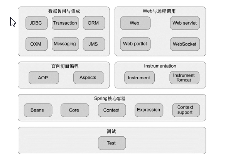
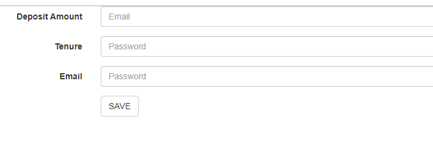
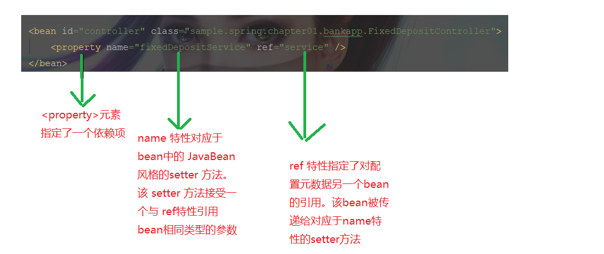
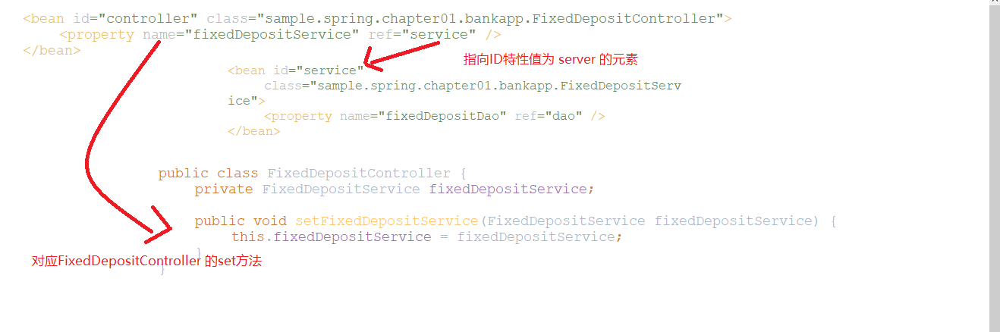

Spring框架是以简化J2EE应用程序开发为特定目标而创建的，是当前最流行的Java开发框架。
本书从介绍Spring框架入手，针对Spring4.3和Java8介绍bean的配置、依赖注入、定义bean、基于Java的容器、AOP、Spring Data、Spring MVC等知识，旨在帮助读者更轻松的学习Spring框架的方法。
简介
1、创建结构良好、易于维护和易于测试的应用程序是开发者的职责
2、Spring框架是SpringSource出品的一个用于简化Java企业级应用开发的开源应用程序框。他提供了开发一个结构良好的，可维护和易于测试的应用所需的基础设施
3、Spring框架的核心是提供了依赖注入(Dependency Injection,DI)机制的控制反转(Inversion of Control,IoC)容器。
注意：在本书中，我们将以一个名为MyBank的网上银行应用为例，介绍Spring框架的功能 Spring框架有多个模块组成，他们提供应用开发功能进行分组，下面描述Spring框架中各个模块组

| 模块组 | 描述 |
|---|---|
| Core container | 包含构成Spring框架基础的模块，该组中的spring-core和spring-beans模块提供了Spring的DI功能和IoC容器实现。spring-expressions模块为在Spring应用中通过Spring表达式语言配置应用程序对象提供了支持 |
| AOP and instrumentation | 包含支持AOP(面向切面编程)和类工具模块，The spring-aop模块提供了Spring的AOP功能spring-instrument提供了对类工具的支持 |
| Messaging | 包含简化开发基于消息的应用的spring-messaging模块 |
| Data Access/Integration | 包含简化与数据库和消息提供者交互的模块。spirng-jdbc模块简化了用JDBC于数据库交互，spring-orm模块提供了与ORM(对象映射关系)框架的集成，如JPA何Hibernate。spring-jms模块简化了与JMS提供者的交互。此模块组还包含了spring-tx模块，该模块提供了编程式与声明式事务管理 |
| Web | 包含简化开发web和portlet应用的模块。spirng-web和spirng-webmvc模块都是用于开发web应用和RESTful的web服务的。spring-websocket模块支持使用WebSocket开发Web应用 |
| Test | 包含spirng-test模块，该模块简化了创建单元和集成测试 |
//读者注：spring websocket用于实现前后端通信==总结==
如图所示，Spring涵盖了企业应用程序开发的各个方面，可以使用Spring开发Web应用程序、访问数据库、管理事务、创建单元测试和集成测试等。在设计Spring框架模块时，你只需要引入应用程序所需要的模块。例如，在应用程序中使用Spring的DI功能，只需要引入Core container组中的模块
一个Java应用程序，由互相调用以提供应用程序行为的一组对象组成。某个对象调用其他对象称为它的依赖项，例如，如果对象X调用了对象Y和Z，那么Y和Z就是对象X的依赖项。DI是一种设计模式，其中对象的依赖项通常被指定为其构造函数和setter方法的参数。并且，这些依赖项将在这些对象创建时注入到该对象中。
在Spring应用程序中，Spring IoC容器负责创建应用程序对象并注入他们的依赖项。Spring容器创建和管理的应用对象称为Bean。由于Spring容器负责将应用程序对象组合在一起，因此不需要实现诸如工厂或者服务定位器等设计模式来构成应用。因为创建和注入依赖项的不是应用程序的对象，而是Spring容器。所以DI也称为控制反转(IoC)。
假设MyBank应用程序包含FixedDepositController和FixedDepositService两个对象。FixedDepositController依赖于FixedDepositService。
package sample.spring.chapter01.bankapp;
//因为FixedDepositController调用了FixedDepositService，所以FixedDepositService就是FixedDepositController的依赖项
public class FixedDepositController {
private FixedDepositService fixedDepositService;
//创建FixedDepositController的构造函数
//用于调用FixedDepositService的save方法
public FixedDepositController(){
fixedDepositService = new FixedDepositService();
}
//
public boolean submit(){
//保存定期存款明细
fixedDepositService.save();
return true;
}
}
如果将FixedDepositController配置为一个Spring Bean，首先要修改程序实例中的FixedDepositController类，让他接收FixedDepositService依赖作为构造函数或者setter方法的参数，修改后的FixedDepositController类。
package sample.spring.chapter01.bankapp;
public class FixedDepositController {
private FixedDepositService fixedDepositService;
public FixedDepositController(FixedDepositService fixedDepositService){
this.fixedDepositService = fixedDepositService;
}
public boolean submit(){
fixedDepositService.save();
return true;
}
} FixedDepositService示例现在已经作为构造函数参数传递到FixedDepositController实例中，现在的FixedDepositService类可以配置一个Spring bean。注意，FixedDepositController类并没有实现或者继承任何spring的接口或者类。
在基于Spring的应用程序中，有关程序对象及其依赖项的信息都是由配置元数据来指定的。Spring IoC容器读取应用程序的配置元数据来实例化应用程序对象并注入它们的依赖项。
//展示MyController和MyService两个类的应用配置元数据
<beans....>
<bean id="myController" class="sample.spring.controller.MyController">
<constructor-arg ref="myService"></constructor-arg>
</bean>
<bean id="myService" class="sample.spring.service.MyService"></bean>
</beans> 每个
//读者认为上面这句话的意思就是这行代码的意思
public FixedDepositController(FixedDepositService fixedDepositService){
this.fixedDepositService = fixedDepositService;
} Spring 容器读取应用程序的配置元数据后，创建由
读者注：//POJO：Plain Ordinary Java Object，简单的Java对象，实际就是普通的JavaBeans 让我们快速的通过几个例子来更好的理解使用Spring开发应用程序有哪些好处
如果你正在使用Spring开发一个需要事务的应用程序，那么可以使用Spring的声明式事务管理来管理事务
MyBank应用程序中的FixedDepositService类，如下所示
public class FixedDepositService{
public FixedDepositDetails getFixedDepositDetails(....){....}
public boolean createFixedDeposit(FixedDepositDetails FixedDepositDetails){......}
} FixedDepositService类是用来定义存款业务中创建和取回明细方法的POJO类，

一位客户在上面的表单中输入了定期存款金额、存期、电子邮箱信息、并单击保存来创建一笔新的定期存款，此时会调用在FixedDepositService中的createFixedDeposit方法来创建存款，createFixedDeposit 方法该客户银行账户中扣除他输入的金额并创建一笔等额的定期存款。
假定关于客户银行余额的信息存在数据表BANK_ACCOUNT_DETAILS中，定期存款的明细存在数据表FIXED_DEPOSIT_DETAILS表中。如果客户创建了一笔金额为x的定期存款，应该在BANK_ACCOUNT_DETAILS表中减去x并在FIXED_DEPOSIT_DETAILS表中插入一条记录来反映这笔新加的定期存款。如果BANK_ACCOUNT_DETAILS表没有更新或者新的记录没有插入FIXED_DEPOSIT_DETAILS表，这会让系统处于不一致状态。这意味着createFixedDeposit方法必须在一个事务中执行
public class FixedDepositService{
public FixedDepositDetaile getFixedDepositDetails(....){....}
public boolean createFixedDeposit(FixedDepositDetails fixedDepositDetails){
Connection con = ....;
try{
con.setAutoCommit(false);
//--执行修改数据库表的sql语句
con.commit();
}catch(SQLException sqle){
if(con !=null){
con.rollback();
}
}
}
} 上面代码展示了如何在createFixedDeposit方法中以编程方式使用JDBC连接对象管理数据库事务。这种方式适合只涉及单个数据库的应用场景。具体资源相关的事务，如与JDBC连接相关的事务，称为本地事务。
当多个事务性资源都有涉及，使用JTA(Java事务API)来管理事务时，例如要在同一个事务中将JMS消息发送到消息中间件(一种事务资源)并更新数据库(另一种事务资源)，则必须使用一个JTA事务管理器管理事务。JTA事务也称为全局(或分布式)事务。要使用JTA，需要先从JNDI获取UserTransaction对象(这是JTA API的一部分)，并编程开始和提交(回滚)事务。
如你所见，可以使用JDBC连接(本地事务)或userTransaction（对于全局事务）对象以编程方式管理事务。但是请注意，本地事务无法在全局事务中运行。这意味着如果要在createFixedDeposit数据库更新方法，使之成为JTA事务的一部分，则需要修改createFixedDeposit方法，用UserTransaction对象进行事务管理。
Spring 通过提供一个抽象层来简化事务管理，从而提供管理本地和全局事务的一致方法。这意味着如果用Spring的事务抽象写createfixeddeposit方法，那么从本地切换到全局事务管理时不需要修改方法，反之亦然。Spring的事务抽象将在第八章详细说明。
//读者注：JTA相关的博文https://blog.csdn.net/qingmuluoyang/article/details/82961801 Spring 提供了使用声明式事务管理的选项，可以在一个方法上使用Spring 的@Transactional注解并让Spring 来处理事务
public class FixfedDepositService{
public FixedDepositDetails getFixedDepositDetails(....)(.....)
@Transactional
public boolean createFixedDeposit(FixedDepositDetails fixedDepositDetails){....}
} FixfedDepositService类没有实现任何接口或继承任何Spring 特定的类以得到Spring的事务管理能力。Spring框架透明的通过@Transactional 注解为createFixedDeposit方法提供事务管理功能。这说明Spring 是一个非侵入性的框架，因为他不需要应用对象依赖于Spirng 特定的类或接口，由于事务管理是由Spring接管的。因此不需要直接使用事务管理API来管理事务。
对于任何Java应用程序来说，安全都是一个重要的方面。Spring Security是一个SpringSoure置于Spring框架顶层的项目，它提供了身份验证和授权功能，可以用来保护Java应用程序。下面以3个在MyBank应用程序中认证过的用户角色为例进行说明，即LOAN_CUSTOMER、SAVINGS_ACCOUNT_CUSTOMER和APPLICATION_ADMIN。调用FixedDepositService类中createFixedDeposit方法的客户必须是相关的SAVINGS_ACCOUNT_CUSTOMER或者拥有APPLICATION_ADMIN角色。而使用Spring Security时，你可以通过在createFixedDeposit方法上添加Spring Security的@Secured注解来轻松地解决这个问题
//使用@Secured注解的createFixedDeposit方法
import org.springframework.transaction.annotation.Transactional;
import org.springframework.security.access.annotation.Secured;
public class FixedDepositService{
public FixedDepositDetails getFixedDepositDetails(....){....}
@Transactional
@Secured({"SAVINGS_ACCOUNT_CUSTOMER","APPLICATION_ADMIN"})
public boolean createFixedDeposit(FixedDepositDetails fixedDepositDetails){....}
} 如果用@Secured给一个方法加注解，安全特性将被Spring Security框架透明地应用到该方法上。上面代码说明，为了实现方法级别的安全，你无须继承或实现任何Spring特定类或接口，而且不需要再业务方法中写安全相关的代码。
我们将在第16章详细讨论Spring Security框架.
Spring对JMX的支持可以让你非常简单地将JMX技术融合到应用程序中。
假设Mybank应用程序的定期存款功能应该只在每天早上9点到下午6点的时间段提供给客户。为了满足这个要求，需要在FixedDepositService中增加一个变量，以此作为一个标志标明定期存款服务是否活跃。
//使用活跃变量的FixedDepositService类
public class FixedDepositService{
private boolean active;
public FixedDepositDetails getFixedDepositDetails(...){
if(active){....}
}
public boolean createFixedDeposit(FixedDepositDetails fixedDepositDetails){
if(active){....}
}
public void activateService(){
active = true;
}
public void deactivateService(){
active = false;
}
} 上述代码表明，FixedDepositService类中加了一个名为active的变量，如果active变量的值为true,getFixedDepositDetails 和 createFixedDeposit方法将按照预期工作。如果active变量的值为false，getFixedDepositDetails 和 createFixedDeposit方法将抛出一个异常。表明定期存款服务当前不可用。activateService 和 deactivateService 方法分别将 active 变量的值置为 true 和 false。
那么，谁调用 activeService 和 deactivateService 方法呢? 假设有一个名为Bank App Scheduler 的调度应用程序，分别在上午9:00 和下午 6:00 执行 activateservice 和 deactivateservice 方法 。Bank App Scheduler 应用使用 JMX(Java 管理扩展) API 与 FixedDepositService 实例远程交互。
Bank App Scheduler 使用 JMX改变 FixedDepositService 中 active 变量的值，你需要将 FixedDepositService实例在一个可被管理的 bean (或者成为MBean) 服务器上注册为一个 MBean ，并将 FixedDepositService 中的activateService 和 deactivateService方法暴露为 JMX 操作方法 。在Spring 中，你可以通过在一个类上添加 Spring 的 @ManagedResource 注释来将一个类的实例注册到MBean服务器上。并且可以使用 Spring @ManagedOperation 注释将该类的方法暴露为 JMX 操作方法。
下面展示使用 @ManagedResource 和 @ManagedOperation 注释将 FixedDepositService 类的实例注册到MBean服务器，并将activateService 和 deactivateService 方法暴露为 JMX 操作方法
//使用 Spring JMX 支持的FixedDepositService类
import org.springframework.jmx.export.annotation.ManagedOperation;
import org.springframework.jmx.export.annotation.ManagedResource;
@ManagedResource(objectName = "fixed_deposit_service:name = FixedDepositService")
public class FixedDepositService{
private boolean active;
public FixedDepositDetails getFixedDepositDetails(...){
if(active){....}
}
public boolean createFixedDeposit(FixedDepositDetails fixedDepositDetails){
if(active){....}
}
@ManagedOperation
public void activateService(){
active = true;
}
@ManagedOperation
public void deactivateService(){
active = false;
}
} 上面代码表明 FixedDepositService 类将他的实例注册到MBean服务器并暴露他的方法为JMX 操作方法时并没有直接使用JMX API。
读者总结：为了实现定期存款功能每天只在9点到6点之间开发，需要在FixedDepositService中添加一个boolean 的变量 active ，当 active 为 true 时就开启功能，否则抛出服务不可用。要操作这个 active 的值，需要借助到 JMX(Java 管理扩展) Spring 的 JMS 支持简化了从 JMS 提供者发送和接收消息。
在 MyBank 应用程序中，当客户通过电子邮件提交一个接收其定期存款明细的请求时，FixedDepositService 将请求的明细发送到 JMS 消息中间件(比如 ActiveMQ) ，而请求随后由消息侦听器处理。Spring 通过提供了一个抽象层来简化与 JMS 提供者 的交互。下面代码展示了FixedDepositService类如何通过 Spring 的 JmsTemplate 将请求的明细发送到 JMS 提供者 。
//发送JMS 消息的FixedDepositService类
import org.springframework.beans.factory.annotation.Autowired;
import org.springframework.jms.core.JmsTemplate;
public class FixedDepositService{
@Autowired
private transient JmsTemplate jmsTemplate;
......
public boolean submitRequest(Request request){
jmsTemplate.converAndSend(request);
}
} FixedDepositService定义了一个 JmsTemplate 类型的变量，这个变量使用了 Spring 的@Autowired 注释，现在，你可以让我 @Autowired 注释 提供了一个 JmsTemplate实例。这个 JmsTemplate 实例知道 JMS 消息发送的目的地。如何配置这个 JmsTemplate 的细节会在第十章介绍。FixedDepositService类的 submitRequest 方法调用了 JmsTemplate 的 convertAndSend 方法，把请求的明细 (由 submitRequest 方法的 Request 参数表示) 作为一个 JMS 消息发送到 JMS 提供者。
这也再一次表明，如果使用 Spring 框架 向 JMS 提供者发送消息，并不需要直接处理 JMS API.
Spring 的缓存抽象提供了在应用程序中使用缓存的一致方法。
使用缓存解决方案来提高应用程序的性能是很常见的。 MyBank 应用使用一个缓存产品以提高读取定期存款明细操作的性能。Spring 框架通过抽象缓存相关的逻辑来简化与不同缓存解决方案的交互。
下面代码展示了FixedDepositService 类的getFixedDepositDetails 方法使用 Spring的缓存抽象功能来缓存定期存款明细。
//将定期存款明细缓存的FixedDepositService类
import org.springframework.cache.annotation.Cacheable;
public class FixedDepositService{
@Cacheable("fixedDeposits")
public FixedDepositDetails getFixedDepositDetails(....){....}
public boolean createFixedDeposit(FixedDepositDetails fixedDepositDetails){....}
} 在上面代码中，Spring的@Cacheable 注解表明有getFixedDepositDetails 方法返回的定期存款明细将被缓存起来，如果使用同样的参数来调用 getFixedDepositDetails 方法，getFixedDepositDetails 方法并不会实际运行，而是直接返回缓存中的定期存款明细。这表明，如果使用Spring框架，则不需要再类中编写与缓存相关的逻辑。Spring缓存抽象在第十章中详细介绍。
在这一部分中，我们看到Spring框架通过透明的向POJO提供服务的方式简化了企业应用开发，从而将开发者从底层API 细节中解放出来。Spring还提供了与各种标准框架，如Hibernate,Quartz,JSF,Struts和EJB等的简单集成，使得Spring成为企业应用程序开发的理想选择。
在这一部分，我们来关注一个使用 Spring 的 DI 功能的简单的 Spring 应用程序。在一个应用程序中使用 Spring 的 DI 功能，需要遵循以下步骤。
现在让我们来看看上诉步骤在 MyBank 应用程序中是如何体现的。
前面讨论过，MyBank 应用程序中，FixedDepositController 调用 FixedDepositService(服务层对象)的方法createFixedDeposit方法。然后，FixedDepositService 调用 FixedDepositDao 对象(数据访问对象)来把定期存款明细保存到应用程序的数据存储区。因此，FixedDepositService 是 FixedDepositController 对象的依赖项。而 FixedDepositDao 是 FixedDepositService 对象的依赖项。
一旦已经确定了应用程序对象，下一步就是根据这些应用程序对象创建 POJO 类。
之前没有讨论过把依赖项作为构造函数参数或作为setter方法参数传递给应用程序对象。接下来展示了一个FixedDepositSerice 的实例(FixedDepositController的依赖项)是如何作为一个setter方法的参数传递给FixedDepositController类的
package sample.spring.chapter01.bankapp;
import org.apache.log4j.Logger;
public class FixedDepositController {
private static Logger logger = Logger.getLogger(FixedDepositController.class);
private FixedDepositService fixedDepositService;
public FixedDepositController() {
logger.info("initializing");
}
public void setFixedDepositService(FixedDepositService fixedDepositService) {
logger.info("Setting fixedDepositService property");
this.fixedDepositService = fixedDepositService;
}
public boolean submit() {
return fixedDepositService.createFixedDeposit(
new FixedDepositDetails(1, 10000, 365, "someemail@something.com"));
}
public FixedDepositDetails get() {
return fixedDepositService.getFixedDepositDetails(1L);
}
} 在上面代码中，FixedDepositService 这个依赖项是通过 setFixedDepositService 方法被传递给 FixedDepositController 的。我们马上就能看到 setFixedDepositService 的setter 方法被 Spring 调用
如果观察FixedDepositController 、 FixedDepositService 和 FixedDepositDao 类，你会发现这几个类都没有实现任何 Spring 特定接口或继承任何 Spring 指定的类 Spring 容器读取指定了应用程序对象及其依赖项的配置元数据，将应用程序对象实例化并注入他们的依赖项。在本节中，我们将首先介绍配置元数据中包含的其他信息，然后深入研究如何用 XML 方式指定配置元数据。
配置元数据指定应用程序所需的企业服务(如事务管理、安全性、远程访问)的信息。例如，如果想让 Spring 来管理事务，你需要在配置元数据中配置 对 Spring 的 PlatformTransactionManager 接口的一个实现。PlatformTransactionManager 实现复制管理事务。(更多关于 Spring 的事务管理功能详见第八章)
你可以通过 XML 文件或者通过POJO类中的注解将配置元数据提供给 Spring 容器。从 Spring 3.0 版本开始。你也可以通过 Java 类 上添加 Spring 的 @Configuration 注解 来将配置元数据提供给 Spring 容器。在本节中，我们将介绍如何通过 XML 方式 指定配置元数据。
通过创建一个包含应用程序对象及其依赖项信息的应用程序上下文XML文件，可以按照 XML 格式将配置元数据提供给应用程序。下面的 XML 展示了 MyBank 应用程序上下文 XML文件 有 FixedDepositController、FixedDepositService、以及FixedDepositDao等对象组成
<beans xmlns="http://www.springframework.org/schema/beans"
xmlns:xsi="http://www.w3.org/2001/XMLSchema-instance"
xsi:schemaLocation="http://www.springframework.org/schema/beans http://www.springframework.org/schema/beans/spring-beans.xsd">
<bean id="controller"
class="sample.spring.chapter01.bankapp.FixedDepositController">
<property name="fixedDepositService" ref="service" />
</bean>
<bean id="service"
class="sample.spring.chapter01.bankapp.FixedDepositService">
<property name="fixedDepositDao" ref="dao" />
</bean>
<bean id="dao" class="sample.spring.chapter01.bankapp.FixedDepositDao" />
</beans> 以下是关于应用程序上下文 XML 文件的要点。
为了理解如何通过在bean类中定义的 setter 方法注入依赖。我们再来观察一下 MyBank 应用程序中的FixedDepositController 类
import org.apache.log4j.Logger;
public class FixedDepositController{
private static Logger logger = Logger.getLogger(FixedDepositController.class);
//声明一个实例变量
private FixedDepositService fixedDepositService;
//构造方法
public FixedDepositController(){
logger.info("initializing");
}
public void setFixedDepositService(FixedDepositService fixedDepositService){
logger.info("Setting fixedDepositService property");
this.fixedDepositService = fixedDepositService;
}
} 上面代码中，FixedDepositConfroller 类中声明了一个类型为 FixedDepositService ,名称为 fixedDepositService 的实例变量。这个fixedDepositService 变量由setFixedDepositService 方法设定 --------- 一种针对 fixedDepositService 变量的 JavaBean 风格的 setter 方法。这是一个 基于setter 方法的 DI 示例，其中的 setter 方法满足依赖项。
下图描述了在 applicationContext.xml 文件中对 FixedDepositController 类的定义

前文的bean 定义表明。FixedDepositController bean 通过
在上图中，
在下图中，总结了

Spring 的 ApplicationContext 对象表示 Spring 容器的一个实例。Spring 提供了一些 ApplicationContext 接口的内置实现，如 ClassPathXmlApplicationContext、FileSystemXmlApplicationContext、XmlWebApplicationContext、XmlPortletApplicationContext等。ApplicationContext实现的选择取决于如何定义配置元数据(使用 XML、注释或Java代码)以及应用程序类型(独立、web或Portlet应用程序)。例如，ClassPathXmlApplicationContext和 FileSytemXmlApplicationContext类适用于以XML格式提供配置元数据的独立应用，XmlWebApplicationContext适用于以XML格式提供配置元数据的Web应用程序，AnnotationConfigWebApplicationContext适用于通过 Java代码以编程方式提供配置元数据的 Web 应用程序，等等。
由于 MyBank 应用程序是一个独立的应用程序，因此可以使用 ClassPathXmlApplicationContext 或 FileSystemXmlApplicationContext 类来创建一个 Spring 容器的实例。应该注意到，ClassPathXmlApplicationContext类从指定的类路径位置加装应用程序上下文 XML 文件，FileSystemXmlApplicationContext 类从文件系统上的指定位置加载应用程序上下文 XML 文件。
import org.springframework.context.ApplicationContext;
import org.springframework.context.support.ClassPathXmlApplicationContext;
public class BankApp{
......
public static void main(String args[]){
ApplicationContext context = new ClassPathXmlApplicationContext(
"classpath:META-INF/spring/applicationContext.xml"
);
}
} 上面代码展示了BankApp负责引导 Spring 容器的 main 方法，其中 应用程序上下文 XML 文件的类路径位置传递给了 ClassPathXmlApplicationContext 类中的构造函数。创建 ClassPathXmlApplicationContext 实例的结果是在应用程序上下文 XML 文件中创建的那些 bean 都是单个范围并被设置为预实例化的。在第二章中，我们将讨论bean的范围，以及使用 Spring 容器预实例化或者延迟实例化 bean 的含义。现在，你可以假设在 Mybean 应用程序的 applicationContext.xml 文件定义的 bean 是singleton 范围的，并设置为预实例化。这就意味着在创建 ClassPathXmlApplicationContext 的实例时。在 applicationContext.xml 文件中定义的bean也会创建。
通过
读者注：AppllicationContext接口是 Spring 容器的一个实例。
Java bean
package sample.spring.chapter01.bankapp;
public class FixedDepositDetails {
private long id;
private float depositAmount;
private int tenure;
private String email;
public FixedDepositDetails(long id, float depositAmount, int tenure,
String email) {
this.id = id;
this.depositAmount = depositAmount;
this.tenure = tenure;
this.email = email;
}
public long getId() {
return id;
}
public void setId(long id) {
this.id = id;
}
public float getDepositAmount() {
return depositAmount;
}
public void setDepositAmount(float depositAmount) {
this.depositAmount = depositAmount;
}
public int getTenure() {
return tenure;
}
public void setTenure(int tenure) {
this.tenure = tenure;
}
public String getEmail() {
return email;
}
public void setEmail(String email) {
this.email = email;
}
public String toString() {
return "id :" + id + ", deposit amount : " + depositAmount
+ ", tenure : " + tenure + ", email : " + email;
}
}
主程序
package sample.spring.chapter01.bankapp;
import org.apache.log4j.Logger;
import org.springframework.context.ApplicationContext;
import org.springframework.context.support.ClassPathXmlApplicationContext;
public class BankApp {
private static Logger logger = Logger.getLogger(BankApp.class);
public static void main(String args[]) {
ApplicationContext context = new ClassPathXmlApplicationContext(
"classpath:META-INF/spring/applicationContext.xml");
FixedDepositController fixedDepositController = (FixedDepositController) context
.getBean("controller");
logger.info("Submission status of fixed deposit : "
+ fixedDepositController.submit());
logger.info("Returned fixed deposit info : "
+ fixedDepositController.get());
}
}
Controller 层
package sample.spring.chapter01.bankapp;
import org.apache.log4j.Logger;
public class FixedDepositController {
private static Logger logger = Logger
.getLogger(FixedDepositController.class);
private FixedDepositService fixedDepositService;
public FixedDepositController() {
logger.info("initializing");
}
public void setFixedDepositService(FixedDepositService fixedDepositService) {
logger.info("Setting fixedDepositService property");
this.fixedDepositService = fixedDepositService;
}
public boolean submit() {
return fixedDepositService.createFixedDeposit(new FixedDepositDetails(
1, 10000, 365, "someemail@something.com"));
}
public FixedDepositDetails get() {
return fixedDepositService.getFixedDepositDetails(1L);
}
}Service层
package sample.spring.chapter01.bankapp;
import org.apache.log4j.Logger;
public class FixedDepositService {
private static Logger logger = Logger.getLogger(FixedDepositService.class);
private FixedDepositDao fixedDepositDao;
public FixedDepositService() {
logger.info("initializing");
}
public void setFixedDepositDao(FixedDepositDao fixedDepositDao) {
logger.info("Setting fixedDepositDao property");
this.fixedDepositDao = fixedDepositDao;
}
public FixedDepositDetails getFixedDepositDetails(long id) {
return fixedDepositDao.getFixedDepositDetails(id);
}
public boolean createFixedDeposit(FixedDepositDetails fdd) {
return fixedDepositDao.createFixedDeposit(fdd);
}
}
Dao层
package sample.spring.chapter01.bankapp;
import java.util.HashMap;
import java.util.Map;
import org.apache.log4j.Logger;
@SuppressWarnings("unused")
public class FixedDepositDao {
private static Logger logger = Logger.getLogger(FixedDepositDao.class);
private String url;
private String driverClass;
private String username;
private String password;
private Map<Long, FixedDepositDetails> fixedDeposits = new HashMap<Long, FixedDepositDetails>();
public static FixedDepositController xyz(String xyz) {
System.out.println(xyz);
return new FixedDepositController();
}
public FixedDepositDao() {
logger.info("initializing");
}
public void setUrl(String url) {
this.url = url;
}
public void setDriverClass(String driverClass) {
this.driverClass = driverClass;
}
public void setUsername(String username) {
this.username = username;
}
public void setPassword(String password) {
this.password = password;
}
public FixedDepositDetails getFixedDepositDetails(long id) {
return fixedDeposits.get(id);
}
public boolean createFixedDeposit(FixedDepositDetails fdd) {
fixedDeposits.put(fdd.getId(), fdd);
return true;
}
}
首先调用 ApplicationContext 的 getBean 方法，从 Spring 容器中检索FixedDepositController bean的一个实例。然后调用 FixedDepositController bean 的方法 的 submit 和 get 方法。要从 Spring 容器检索其实例的 bean 的名称 是传递 给 getBean 方法的参数。传递给 getBean 方法的 bean 名称必须是要检索的bean的 Id 或name特性的值。如果没有指定名称的bean注册到 Spring 容器中，getBean 方法将抛异常。